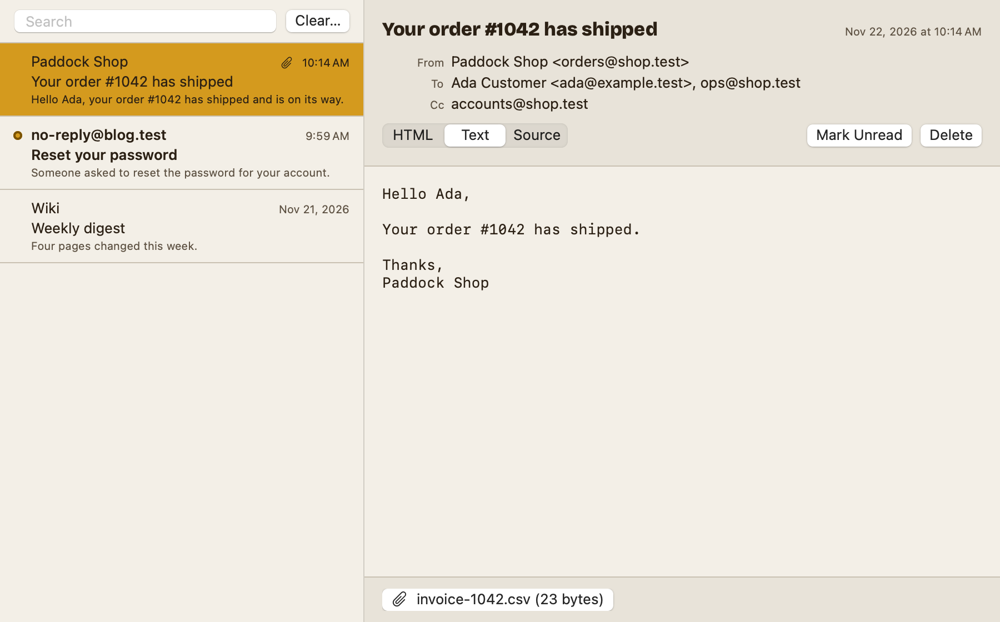

Developer tooling · Swift
Paddock
A local PHP and Laravel environment for Intel Macs that works the moment it is installed.
What it does
Paddock is a native macOS app, background service and command-line tool, written in Swift, that turns a folder of projects into working .test sites. Park a directory once and every folder inside it is served at http://<folder>.test, with trusted HTTPS when you ask for it.
It handles the parts of a local environment that usually need a checklist: PHP versions side by side, Xdebug per version, MySQL, PostgreSQL, Redis, Meilisearch, S3-compatible storage and a mail catcher — plus windows for mail, logs, databases and dumps.


Highlights
- Zero-configuration sites: park a folder once and every project inside gets its own
.testaddress. - Trusted local HTTPS through Paddock's own certificate authority, so browsers never complain.
- PHP versions side by side, each site pinning its own;
phpandcomposerfollow the folder you are in. - One-action services — MySQL, PostgreSQL, Redis (Valkey), Meilisearch, object storage, mail catcher — each printing its own
.envlines. - A Mail window for what your apps send, a Logs window that folds Laravel stack traces, and dumps from
dump()anddd()out of the page. - A per-project
paddock.jsonkeeps queue workers, schedulers and websocket servers running, and restarts them after crashes.
Install
curl -fsSL https://raw.githubusercontent.com/gowelle/paddock/main/Scripts/install.sh | bashDownloads the latest release, checks it against the release SHA-256, puts Paddock.app in /Applications and opens it. It asks for no password and runs nothing as root.
Runs on
- macOS 13 or later, Intel
- PHP 8.4 and 8.5
- Swift 6